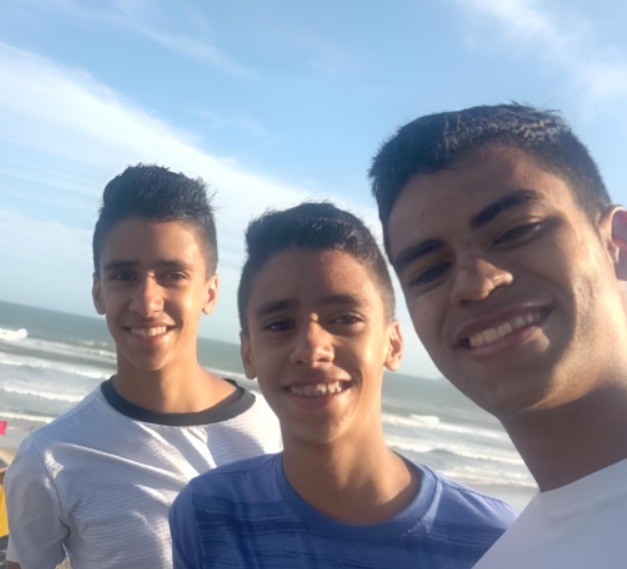
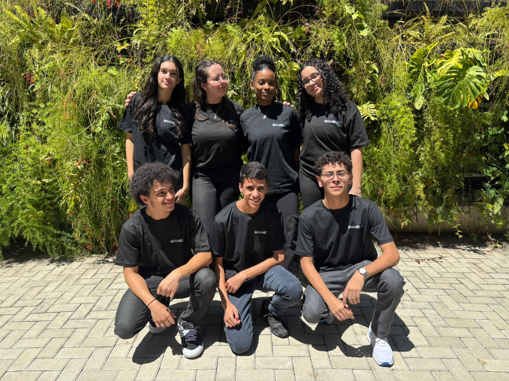
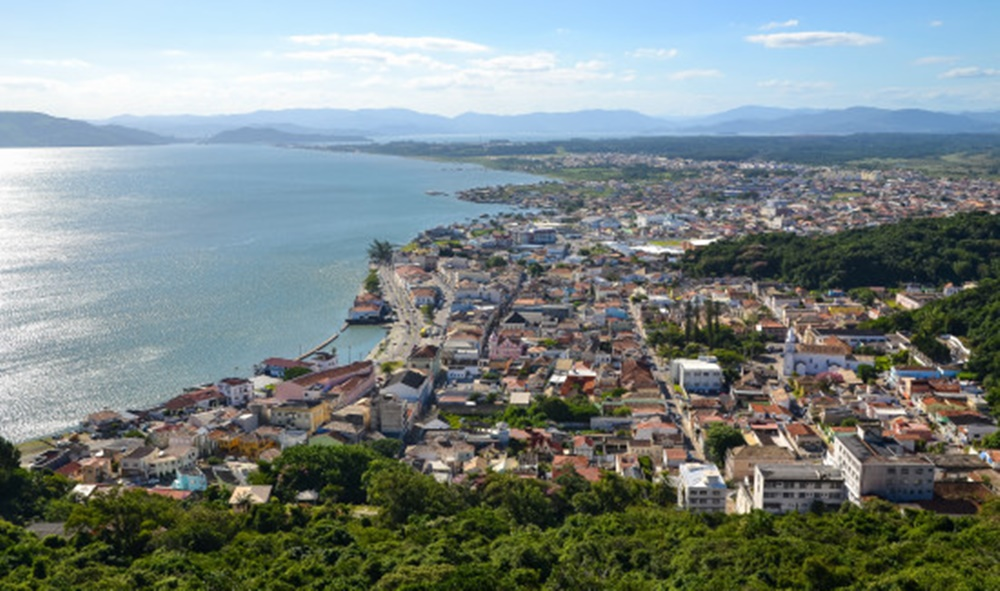

Gustavo Costa
Meu nome é Gustavo Costa, nasci em 22/09/2009 em São Bernado do Campo. Atualmente moro com dois irmãos, minha mãe e meu padastro. atualmente estudo no instituto J&F.
Conheça mais

Curiosidades
- Jogo tenis de mesa
- Não gosto de chocolate preto (apenas o branco)
- Tenho um irmão gêmeo
- Já quebrei o pé
- Tenho dois projetos, ScaneIA e Trustable Feedback for Marketplaces
Lugares que já fui
- Minas Gerais (quase sul de bahia)
- Santa Catarina
- São Roque
- Campinas
- Laguna

Lugares que quero ir
- Estados Unidos
- Espanha
- Japão
- França
- Arábia Saudita